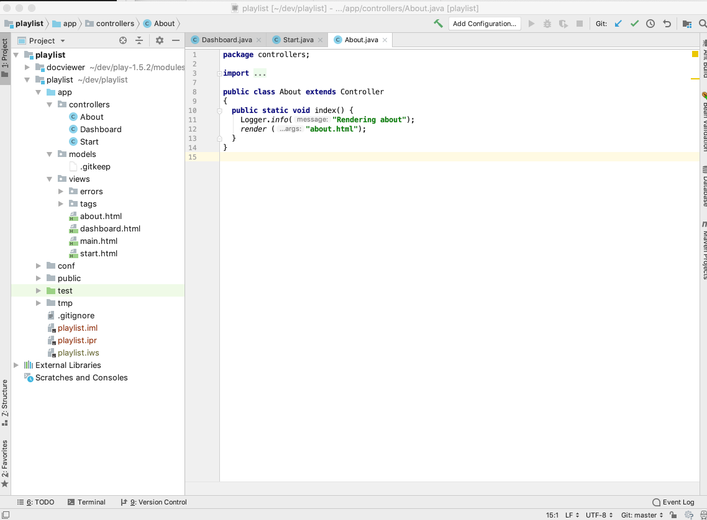
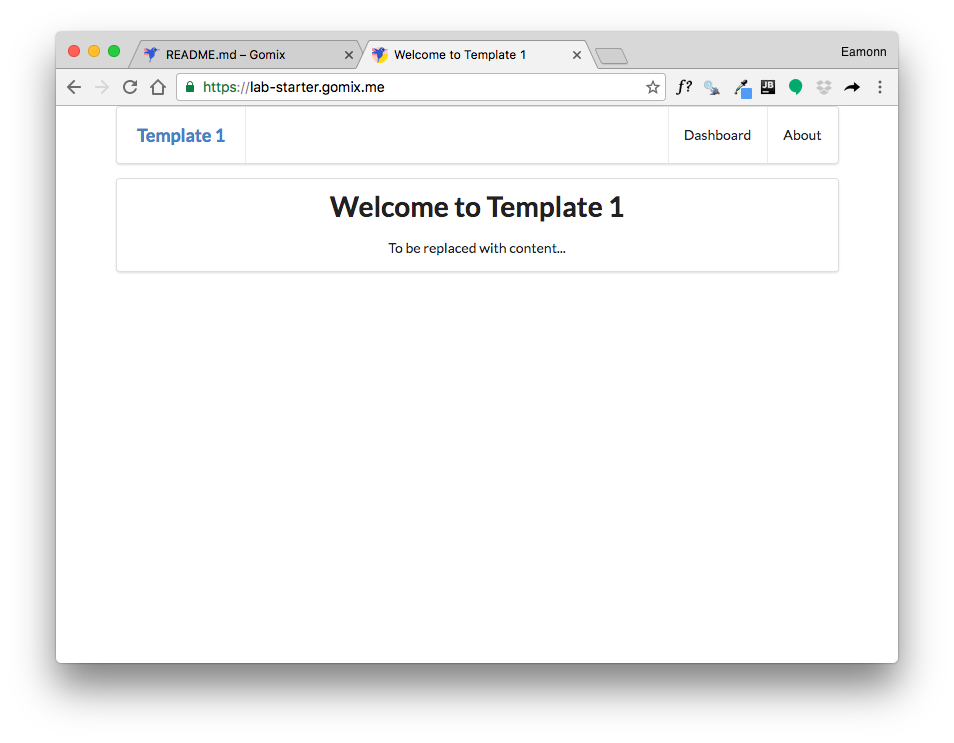
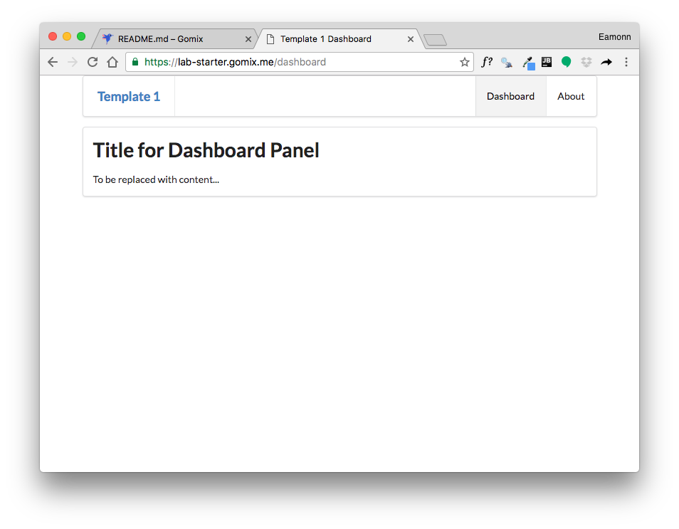
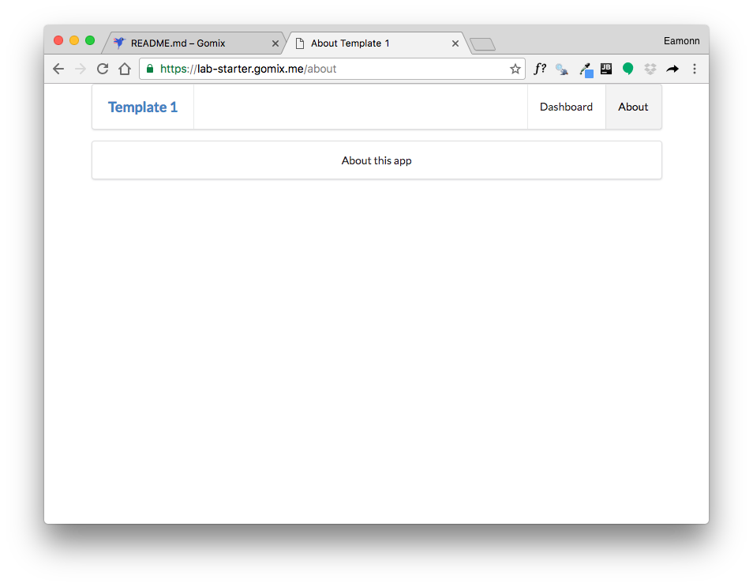
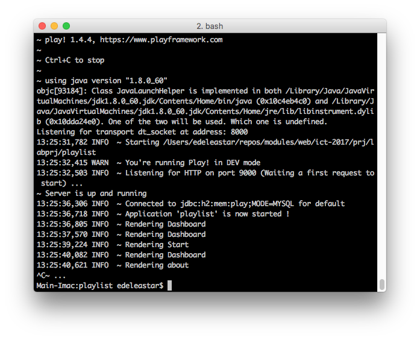
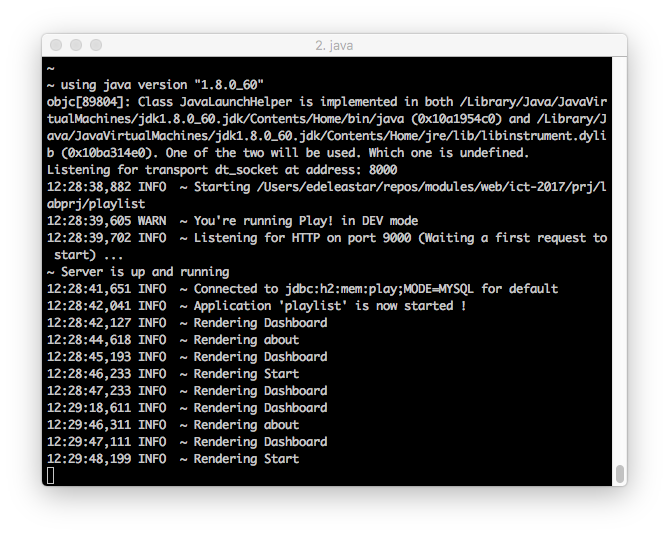
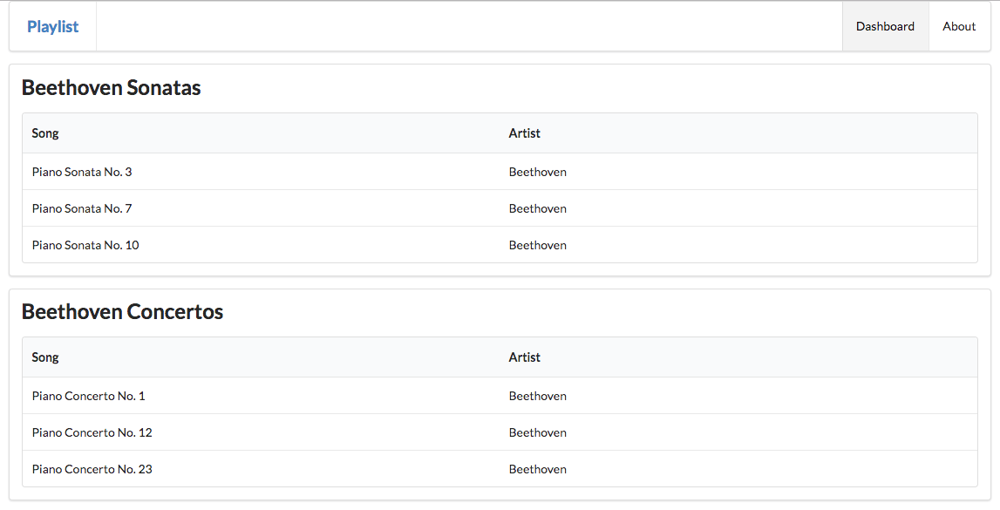

Import, rename and run a new starter project. Extend the project to include a Model. (Note: the video shows java + play revisions a little behind your current installation)
Create a new play project - this time using a different procedure from the first lab. Open a shell and enter the following:
git clone https://github.com/wit-hdip-comp-sci-2019/play-template-1The shell should show something like this:
Cloning into 'play-template-1'...
remote: Counting objects: 66, done.
remote: Compressing objects: 100% (47/47), done.
remote: Total 66 (delta 9), reused 66 (delta 9), pack-reused 0
Unpacking objects: 100% (66/66), done.The default name of the project should be changed now. This will require the following procedure:
play-template-1. Call the folder playlist instead.Use Sublime Text to edit the file: playlist/conf/application.conf. The first three lines contains the following:
# This is the main configuration file for the application.
# ~~
application.name=play-template-1Change play-template-1 above to playlist, and save the file:
# This is the main configuration file for the application.
# ~~
application.name=playlistStill in the shell, and in the project folder enter the following command:
play idealizeYou should get this response:
~ _ _
~ _ __ | | __ _ _ _| |
~ | '_ \| |/ _' | || |_|
~ | __/|_|\____|\__ (_)
~ |_| |__/
~
~ play! 1.5.2, https://www.playframework.com
~
~ OK, the application is ready for Intellij Idea
~ Use File, Open Project... to open "playlist.ipr"
~Now we can import the project into Idea. Launch Idea, and select File->Open. Select the Directory containing the project you have just created (play-template-1)

(Again - you may need to press the button on the extreme bottom left to get the view shown above)
Explore the controllers and views folders - examining each file.
Inside the project folder, enter the following command in the shell/command prompt:
play runWhich should respond with:
~ _ _
~ _ __ | | __ _ _ _| |
~ | '_ \| |/ _' | || |_|
~ | __/|_|\____|\__ (_)
~ |_| |__/
~
~ play! 1.5.2, https://www.playframework.com
~
~ Ctrl+C to stop
~
~ using java version "1.8.0_162"
Listening for transport dt_socket at address: 8000
17:50:30,555 INFO ~ Starting /Users/edeleastar/dev/play-template-1
17:50:30,658 WARN ~ You're running Play! in DEV mode
17:50:30,760 INFO ~ Listening for HTTP on port 9000 (Waiting a first request to start) ...
~ Server is up and runningNavigate now to:
You should see view like these:
  
To stop the application, enter Ctrl+C in the shell:

This will stop the application. Try
... and try again, and verify that the app has now stopped.
Practice starting and stopping the app.
We are going to evolve this project into a simple playlist maker, enabling a user to create a playlist of songs.
First, we can make some simple changes to rebrand the app as Playlist instead of Template 1
Edit the following files and make the changes as shown:
...
<header class="ui header item"> <a href="/"> Playlist </a></header>
......
<p>
A Little Playlist Maker - Version 1
</p>
......
<h1 class="ui header">
Welcome to Playlist 1
</h1>
<p>
A small app to let you compose playlists.
</p>
...Run the app (it may be still running). Check out the new 'branding'. Make sure the menu operates as expected.
In this step we will start to display the playlist itself. First, introduce new partial called listsongs.html:
<table class="ui fixed table">
<thead>
<tr>
<th>Song</th>
<th>Artist</th>
</tr>
</thead>
<tbody>
<tr>
<td>
</td>
<td>
</td>
</tbody>
</table>Now change the dashboard view to invoke this partial:
#{extends 'main.html' /}
#{set title:'Dashboard' /}
#{menu id:"dashboard"/}
<section class="ui segment">
<h2 class="ui header">
Playlist Title
</h2>
#{listsongs/}
</section>Make sure the app runs successfully. The table will be empty.
To test out the UX, we might include some actual songs (replace the <tbody> of listsongs with the following):
<tbody>
<tr>
<td>
Piano Sonata No. 3
</td>
<td>
Beethoven
</td>
</tr>
<tr>
<td>
Piano Sonata No. 7
</td>
<td>
Beethoven
</td>
</tr>
<tr>
<td>
Piano Sonata No. 10
</td>
<td>
Beethoven
</td>
</tr>
</tbody>... and also give the playlist a title in dashboard:
....
<h2 class="ui header">
Beethoven Sonatas
</h2>
...Exercise the UX fully again. Make sure the playlist above is being displayed.
Keep an eye on the shell (console) used to launch the app:

Locate where in the controllers these messages are being generated:
...
Logger.info("Rendering Dashboard");
...These logging messages are a useful technique for figuring out what might be going wrong with an app. There are three variants of the logging statement: info, error and debug. Experiment now with some of these, and exercise the app to make sure the log messages appear.
...
Logger.Error("some error has occurred");
......
Logger.debug("some step has occurred...");
...Introduce some of the above log statements, and verify that they appear as expected on the console.
The app as we have it now could have been completely built as a static web site. However, the framework and tools we have used in this version enable us to evolve this static site into an interactive app
We can introduce 'model' classes to implement the playlist in our app. Introduce these two new classes into the models package:
package models;
public class Song
{
public String title;
public String artist;
public Song(String title, String artist)
{
this.title = title;
this.artist = artist;
}
}package models;
import java.util.ArrayList;
import java.util.List;
public class Playlist
{
public String title;
public List<Song> songs = new ArrayList<Song>();
public Playlist(String title)
{
this.title = title;
}
}In the Dashboard controller, we can define a playlist object in Java, add some songs, and send to the view:
package controllers;
import models.Playlist;
import models.Song;
import play.Logger;
import play.mvc.Controller;
public class Dashboard extends Controller
{
public static void index() {
Logger.info("Rendering Dashboard");
Song s1 = new Song("Piano Sonata No. 3", "Beethoven");
Song s2 = new Song("Piano Sonata No. 7", "Beethoven");
Song s3 = new Song("Piano Sonata No. 10", "Beethoven");
Playlist playlist = new Playlist("Beethoven Sonatas");
playlist.songs.add (s1);
playlist.songs.add (s2);
playlist.songs.add (s3);
render ("dashboard.html", playlist);
}
}The next step is to eliminate some of the static content from the listsongs partial. Here is a new version to replace the current version:
<table class="ui fixed table">
<thead>
<tr>
<th>Song</th>
<th>Artist</th>
</tr>
</thead>
<tbody>
#{list items:_playlist.songs, as:'song'}
<tr>
<td>
${song.title}
</td>
<td>
${song.artist}
</td>
</tr>
#{/list}
</tbody>
</table>In the above, we are iterating over an array of songs inside a playlist object
Here is a new version of the dashboard, which will have to pass the playlist to the partial :
#{extends 'main.html' /}
#{set title:'Dashboard' /}
#{menu id:"dashboard"/}
<section class="ui segment">
<h2 class="ui header">
Beethoven Sonatas
</h2>
#{listsongs playlist:playlist/}
</section>This playlist object, in turn, must be passed to the dashboard controller for this to work. We already did this in the Dashboard conntroller.
Run the app now - and verify that you can see the playlists.
Here is a revised Dashboard index method:
...
public static void index() {
Logger.info("Rendering Dashboard");
Song s1 = new Song("Piano Sonata No. 3", "Beethoven");
Song s2 = new Song("Piano Sonata No. 7", "Beethoven");
Song s3 = new Song("Piano Sonata No. 10", "Beethoven");
Playlist p1 = new Playlist("Beethoven Sonatas");
p1.songs.add (s1);
p1.songs.add (s2);
p1.songs.add (s3);
Song s4 = new Song("Piano Concerto No. 1", "Beethoven");
Song s5 = new Song("Piano Concerto No. 12", "Beethoven");
Song s6 = new Song("Piano Concerto No. 23", "Beethoven");
Playlist p2 = new Playlist("Beethoven Concertos");
p2.songs.add (s4);
p2.songs.add (s5);
p2.songs.add (s6);
List<Playlist> playlists = new ArrayList<Playlist>();
playlists.add(p1);
playlists.add(p2);
render ("dashboard.html", playlists);
}
...The above code will have errors - unless you import these libraries:
import java.util.ArrayList;
import java.util.List;Before pasting in the above code - try to use the Eclipse autocorrect feature in insert them automatically.
Notice that we are now creating 2 playlists: p1 and p2. Each of these contains 3 songs. Read this code carefully and make sure you can understand the data structure.
Here is a new version of the dashboard view:
#{extends 'main.html' /}
#{set title:'Dashboard' /}
#{menu id:"dashboard"/}
#{list items:playlists, as:'playlist'}
<section class="ui segment">
<h2 class="ui header">
${playlist.title}
</h2>
#{listsongs playlist:playlist/}
</section>
#{/list}Browse the dashboard app now - and you should see the two views:

See if you can follow the logic from the controller to the view:
...
render ("dashboard.html", playlists);
...Then in the view - a loop iterating over the playlists
#{list items:playlists, as:'playlist'}
...
...
#{/list}... and finally in listsongs.html, iterating over each song in a single playlist:
...
#{list items:_playlist.songs, as:'song'}
...
...
#{/list}
...This is a complex flow from java into one template... then into another.
A complete version of the app as it should be at the end of this lab:
Download this, and unzip it. Then, from a shell inside the folder enter:
play idealize... and then open the project. Run the project (using play run from the command line) and examine the running program by browsing to:
Look again at the playlist as represented in:
Song s1 = new Song("Piano Sonata No. 3", "Beethoven");
Song s2 = new Song("Piano Sonata No. 7", "Beethoven");
Song s3 = new Song("Piano Sonata No. 10", "Beethoven");
Playlist p1 = new Playlist("Beethoven Sonatas");
p1.songs.add (s1);
p1.songs.add (s2);
p1.songs.add (s3);
Song s4 = new Song("Piano Concerto No. 1", "Beethoven");
Song s5 = new Song("Piano Concerto No. 12", "Beethoven");
Song s6 = new Song("Piano Concerto No. 23", "Beethoven");
Playlist p2 = new Playlist("Beethoven Concertos");
p2.songs.add (s4);
p2.songs.add (s5);
p2.songs.add (s6);
List<Playlist> playlists = new ArrayList<Playlist>();
playlists.add(p1);
playlists.add(p2);Review the structure carefully. Can you draw a picture of the structure of the data? Extend your version of the app to contain a new playlist - make up some songs. Verify that they are rendered as expected.
Extend the song model to also have a duration field + a genre field. Change the constructor to initialise these fields. Modify the dashboard view to display these new fields.
Extend the following views: